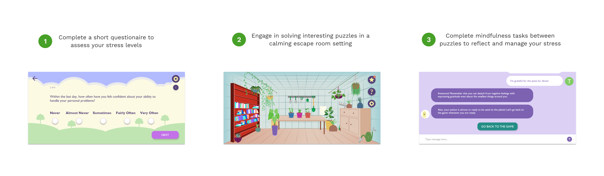
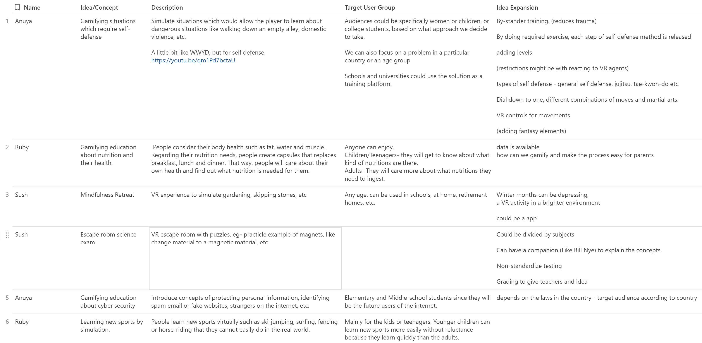
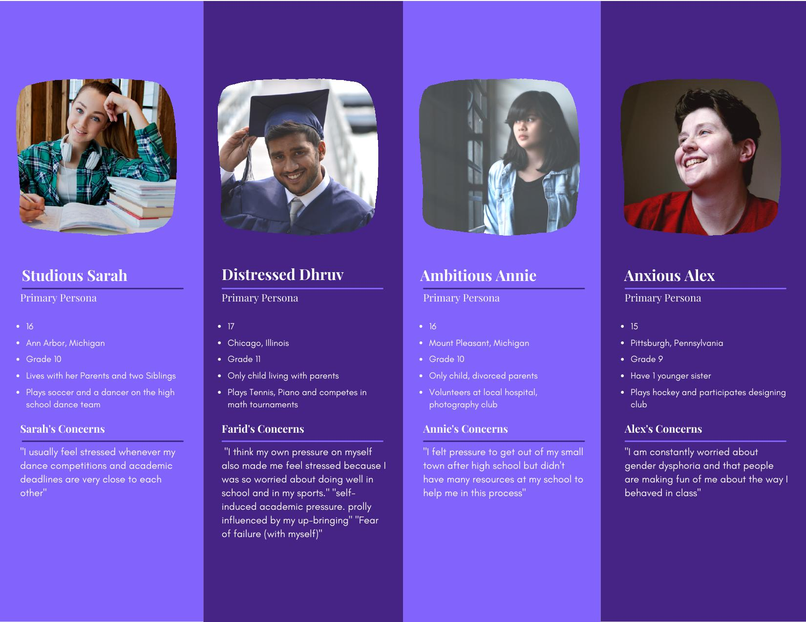
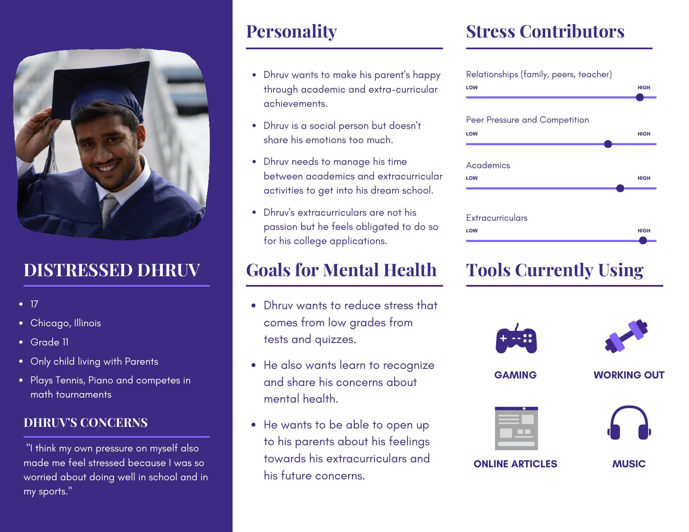
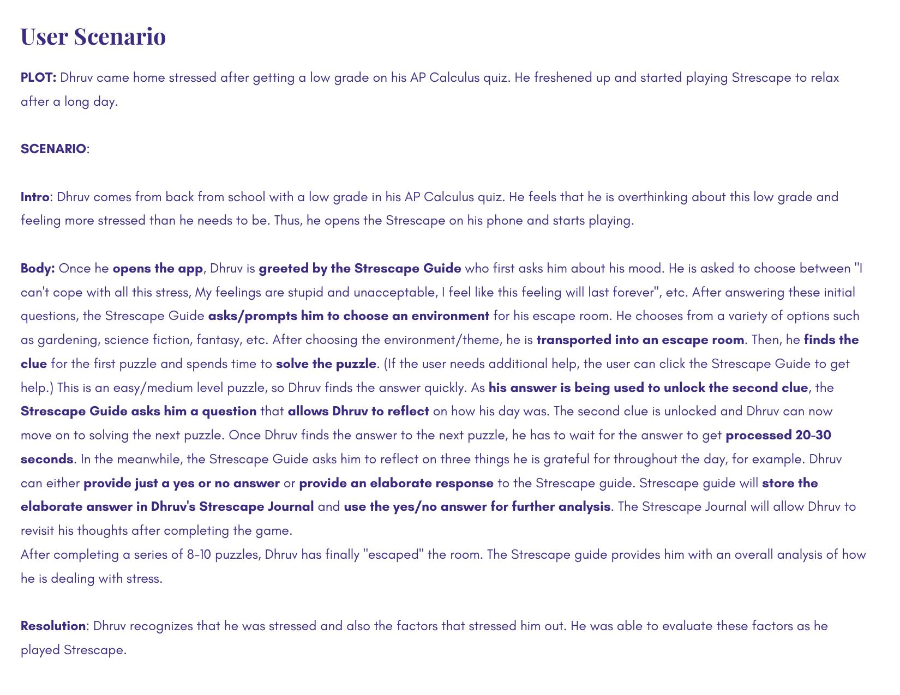
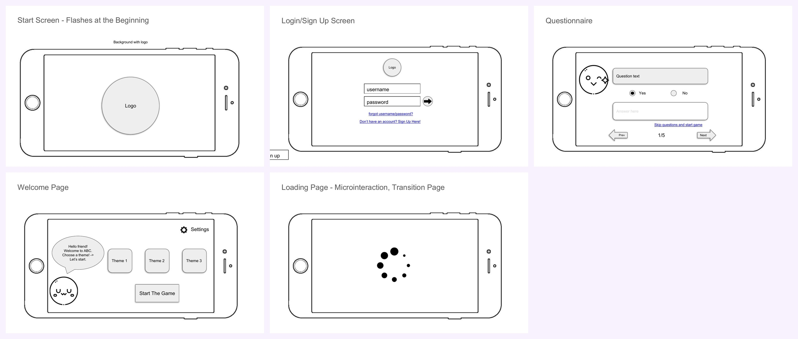
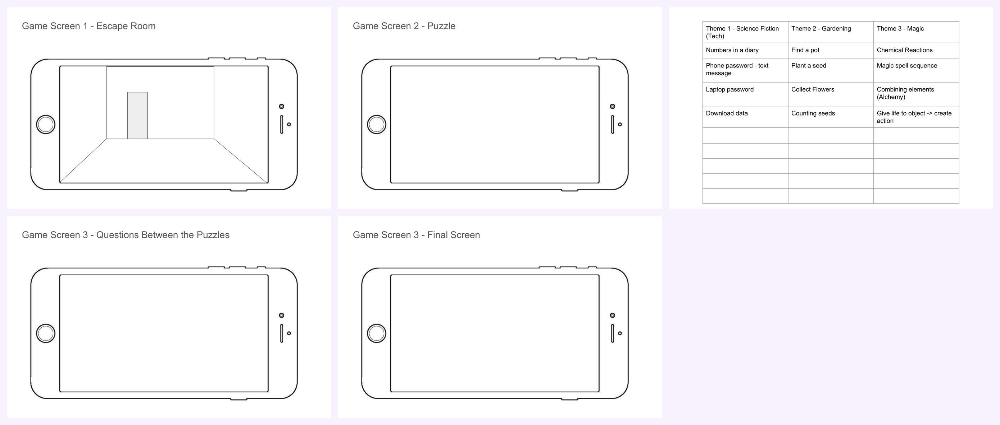
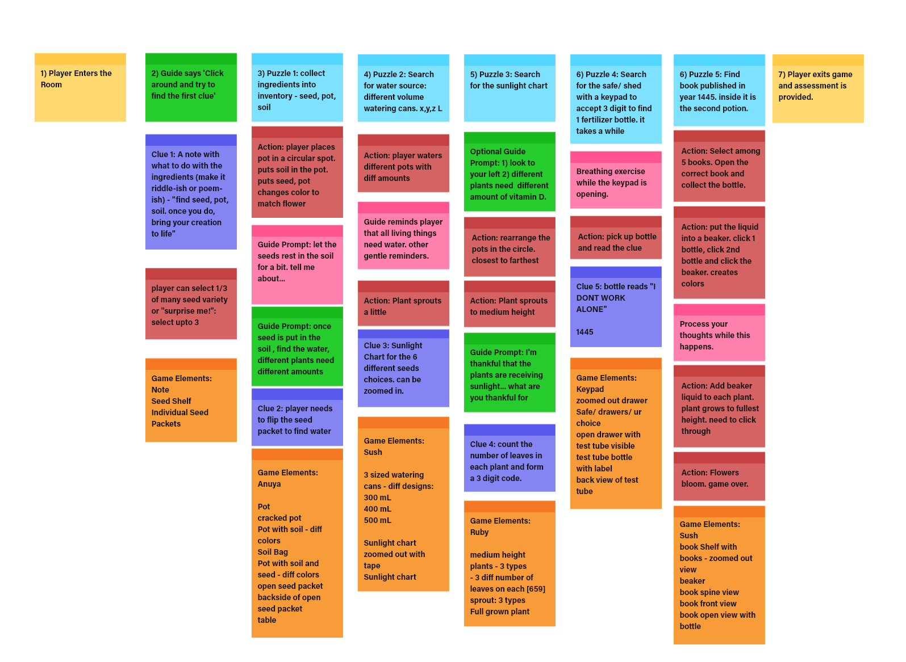
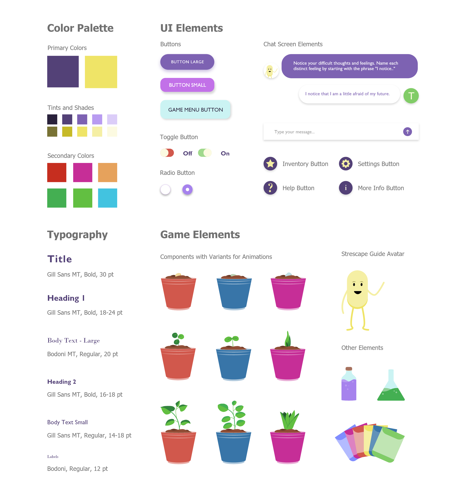

UX Design & Research · ACM-CHI 2021 Student Game Competition
Strescape
Gamifying Stress Management through an Escape Room Game App

UX Design & Research · ACM-CHI 2021 Student Game Competition
Gamifying Stress Management through an Escape Room Game App
I worked on designing this game for the ACM-CHI 2021 Student Game Competition with three teammates from the School of Information at the University of Michigan. We received guidance from Dr. Carol Scott (Post-Doctoral Research Fellow, Social Work) for conducting background research on stress, mental health, and mindfulness for high school students.
Strescape is an interactive escape room-style game for high school students that helps them identify and manage stress.Strescape is an interactive escape room-style game for high school students that helps them identify and manage stress. Players solve a series of puzzles and clues while engaging in guided mindfulness conversations with an in-game agent between each puzzle.

Our goal was to create a transformative and transgressive play — expanding traditional gameplay by using a gaming interface to motivate high school students to recognize and process their stress and the factors contributing to it.
Strescape allows users to work through various puzzles in an escape room while being prompted to complete mindfulness tasks between each puzzle — teaching healthy, long-term coping mechanisms through a familiar, fun interface.
The game should feel like a relief, not a burden. All mindfulness steps are optional, puzzles are not overly complex, and the guide character is non-judgmental and compassionate — ensuring the app itself never becomes a source of stress.
01 · Ideation
We started by brainstorming as many problems as we could solve using a game based on transgressive and transformative play. The main idea emerged organically from team conversation — as we talked about our own high school experiences, we realized all of us had gone through meaningful stress, and that a reflective game might help others do the same.

02 · Research
Under the guidance of Dr. Carol Scott, we researched stress, anxiety, mindfulness, and meditation to define our problem and solution.
Students in high school struggle with stress and anxiety regarding peer pressure, academics, parental expectations — and most of the time these issues go unnoticed due to social stigma.
A game targeted at helping students recognize, process, and reduce stress — motivating them to be aware of their issues and seek help through embedded suggestions and mindfulness exercises.
High school students aged 14–18. Designed for smartphones — making support available wherever and whenever a student needs it. The game runs in landscape mode.
03 · Persona
Based on background research and competitive analysis, we created 4 primary user personas. Among them, Distressed Dhruv served as the central persona driving the core game design — representing a high-achieving student whose stress is self-imposed and largely invisible to those around him.



Puzzles in the game should never be overly complex — a frustrating game would be counterintuitive to the goal of stress relief. This directly informed the adaptive difficulty design and the always-available hint system.
04 · Wireframes
Once we outlined how the game would function, we created lo-fi wireframes for all screens — defining visual layout, interaction flows, and the placement of mindfulness prompts between puzzles.



05 · Design System
Before prototyping, we defined the design components to ensure consistency in the visual identity and aesthetic of the game. Our visual system aimed at:

The guide character design was intentionally trauma-informed — giving users full control over the guide's appearance so the app feels safe and personalized, not clinical or prescriptive.
06 · Hi-fi Prototype
Using the defined design system, we built the final Strescape prototype in Adobe XD — covering the complete game flow from stress assessment through mindfulness chat to post-game journaling.
07 · Gameplay Demo
Along with the prototype, we submitted a gameplay video showing two users testing the game — and our own demonstration walkthrough.

Although we did not advance to the next stage of the competition, Strescape was a formative project that combined UX research, game design, and mental health in a domain I care deeply about.